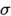
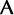
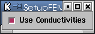
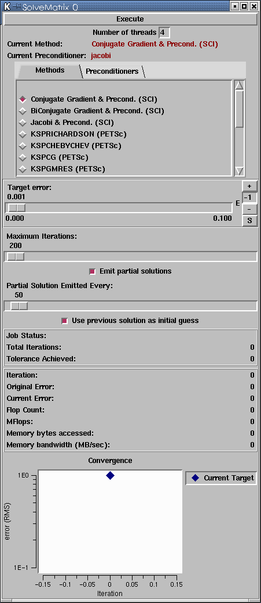

|
Chapter 5: Bioelectric Field Simulation Chapter Overview In Chapters 1-4, we learned about deataflow programming, and constructed visualization networks for exploring datasets. But where did the Field voltage datavalues come from? In this chapter, we will construct a simulation network that computes simulated voltages for a realistic volume conductor problem. In preceeding chapters, we used modules from the central SCIRun package. Those modules have been general purpose tools--not targeted towards any specific application. By contrast, in this chapter we begin using modules from the BioPSE package, a set of tools specifically written for the modeling, simulation, and visualization of bioelectric field problems. Typically, Packages (Figure 5.1) are logically grouped sets of modules and the supporting code for those modules. They can be created by anyone, and compiled into SCIRun. Packages can be wholly dependent upon SCIRun code, or can depend upon any additional third party code. Packages can, in fact, simply wrap around third party code, such that SCIRun can use Dataflow functionality. Packages are a major mechanism to bridging in SCIRun. Bridging is the concept that SCIRun can be used in conjunction with other useful software such as Matlab or Teem.
Volume conductor problem Given a volume conductor model and an equivalent dipole source, we would like to compute the potentials and electric field induced by the source through the domain. An analytic solution exists for problems of some very specific geometric models (e.g., analytic cylinders or spheres). However, for most real-world problems, we can only obtain the solution through discretization. For this application, we will discretize our domain into tetrahedral finite elements, where each element contains a conductivity tensor defining how electricity travels through its region of the domain. Within each element, we assume a piece-wise linear potential field (piece-wise constant electric field). The above problem is governed mathematically by
Poisson's equation: where 
is the local conductivity tensor,  to determine the potentials, Finite element simulation network To compute the electric and potential fields given
a finite element volume conductor mesh and a dipolar
current source, we follow these steps: 1 -- Read in the finite element mesh (tet elements, with a conductivity tensors for each cell). 2 -- Read in any dipole sources. 3 -- Construct the finite element stiffness matrix based on the conductivity mesh. 4 -- Construct the right hand side source vector based on the location and orientation of any dipole sources. 5 -- Solve the linear system Each of the above steps corresponds to a SCIRun module. For steps 1 and 2, we will use SCIRun/DataIO/FieldReader modules. For step 3 we will use a BioPSE/Forward/SetupFEMatrix module. For step 4 we will use a BioPSE/Forward/ApplyFEMCurrentSource module. And for step 5, we will use a SCIRun/Math/SolveMatrix module. All of these modules should be connected as shown in Figure XXX. The User Interface settings for each of the modules are described in the next paragraphs. FEM user interface settings The SetupFEMatrix module constructs a finite element stiffness matrix from a tetrahedral volume mesh. On the UI (Figure 5.3)we can choose whether to incorporate the local conductivity tensors into the stiffness matrix, or whether to use a uniform conductivity. For this application, we will incorporate the local conductivity changes. 
The ApplyFEMCurrentSource module modifies the right hand side vector to account for current sources within the model. On the UI (Figure 5.4), you can choose whether the current sources are due to a dipole or to a source/sink electrode pair. Select the "dipole" setting.
The SolveMatrix module solves a linear system using one of several linear algebra methods. Choose the "Conjugate Gradient" solver on the UI (Figure 5.5), and set the Target Error to 0.0001, and the Maximum Iterations to 200. Note: the SolveMatrix UI must remain either open or minimized while the solver is running; it must not be closed completely. For more information on the SolveMatrix module, click on this link. 
Lastly, for this simulation you should choose the utahtorso-lowres-mesh.tvt.fld Field for the FieldReader on the left, and the utahtorso-lowres-dipole.pcv.fld Field for the FieldReader on the right. The mesh Field contains the tetrahedral finite element mesh of the Utah Torso model, with conductivity indices stored at each element of the model. The dipole Field contains a single dipole vector, positioned within the torso volume. Running the simulation With all of the modules connected and all of the UI
state configured, you are ready to run the simulation.
Select the "Execute" item from one of the module icon
dropdown menus, or press the "Execute" button on a
module's user interface. As the simulation
progresses, you will see the residual plot in the
SolveMatrix module converge which is located at the bottom of the SolveMatrix UI. Congratulations, you
have solved a finite element problem! |